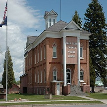

The History City
Fish Haven, originally named Rush Creek, is an unincorporated community along the shores of Bear Lake in Bear Lake County, Idaho, United States. It is 4 km (2.5 miles) north of the Utah border. The first settlement at Fish Haven was made in 1864. A post office called Fish Haven was established in 1867, and remained in operation until 1962.